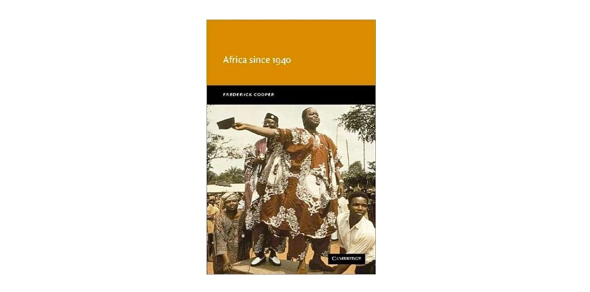

收录于合集
#民主与民主化 34 个
#比较政治学 121 个
#国家建构与国家发展 70 个
作者简介： Frederick Cooper，美国历史学家，现任纽约大学历史系教授，他的主要研究领域为帝国与殖民主义历史，以及非洲历史。这本《1940年之后的非洲》（Africa since 1940）是Cooper钻研非洲历史最重要的成果之一，首创了解释非洲政治现象的重要概念——守门人国家（Gatekeeper State）。除了这本书之外，他于2014年出版的《世界中的非洲：资本主义、帝国和民族国家》（Africa in the World: Capitalism, Empire, Nation- State）应该也是非洲研究者值得关注的作品。近年来Cooper的研究也得到了国内学界的关注。去年由商务印书馆翻译出版的《世界帝国史：权力与差异政治》（Empires in World History: Power and the Politics of Difference）就是Cooper与其妻子Jane Burbank的作品。
**
**
书目简介： 本书是一本历史学著作，作者通过对一系列案例和现象的历时性梳理既串起来了一个连贯的主题，又展示了一个丰满和立体的非洲政治发展图景。在非洲从殖民地转向独立国家的进程中，守门人国家似乎成了大多数非洲国家难以摆脱的宿命。我将作者的论述归纳到发展型殖民主义时代、走向独立的时代和独立后的时代三个阶段来谈非洲国家从殖民地到守门人国家的历史过程。

发展型殖民主义的时代
与大多数非洲研究的作品用殖民主义的到来对非洲历史发展进行划分不同，本书的论述以1940年为起点。作者认为，40年代之前的非洲殖民主义主要还属于保守的殖民主义，从40年代开始，非洲的殖民主义主要演变为了发展型殖民主义，这是非洲殖民主义失败的起点，也是非洲以国家引导发展的开端。而改变这一切的就是第二次世界大战的发生。作者认为，在非洲政治发展的过程中，二战是不亚于非洲独立的重要历史节点。不过发展型殖民主义并不是一个聚精会神搞建设的阶段，相反是孕育非洲独立的重要准备阶段。也正是因为发展策略的失败，所以半吊子式的守门人国家才始终没能变成一般标准上的现代国家。
40年代之前的殖民统治，殖民者只致力于从殖民地掠夺矿产、农产品和劳动力，并向殖民地出口商品，希望以最小的统治成本获得最大的收益。但随着雇佣劳动部门的兴起，和非洲各阶层与殖民当局的结构性冲突，这种最小成本统治的日子一去不复返了。到30年代中期，几乎从农民到知识分子所有阶层都被动员起来了。其中最为关键的是有组织的雇佣劳动力。
在1935-1950年间，非洲的港口、铁路、矿场和商业中心都笼罩在罢工的氛围下。非洲人的斗争比发生于1939-1945的二战来的更早，持续的时间也更长。随后的世界大战在一段时间内削弱了欧洲列强的军事力量，并在更长时间里削弱了他们的经济力量，还从根本上动摇了欧洲人的自信并且摧毁了殖民主义的意识形态。面对法西斯对欧洲的征服，丘吉尔提出了民族自决的原则。希特勒彻底抹黑了种族主义的意识形态，这就抽空了殖民主义的思想基础。虽然当时殖民当局已经意识到，只有给非洲人提供更体面的公共服务和更好的工作前景才能阻止无序和混乱的进一步发酵。英国也于1940年出台的殖民发展与福利法案（The Colonial Development and Welfare Act of 1940)，这是第一个使用母国资源来提高殖民地人民生活水准的法案。但大战增加了对于非洲产品和劳动力的需求，并且减少了欧洲制造业商品的在非洲的出口。
所以直到战后，非洲的生活水准并没有提高。短缺的商品和随之而来的通货膨胀，引发了非洲更为持久和普遍的大罢工。普遍性的罢工从英属非洲开始蔓延。法属非洲的雇佣劳动部门没有英属非洲发达，针对他们的罢工也来得略晚。相对于英法对于有组织工会的无可奈何，比利时政府根本没有给任何形式的工会以任何空间。而葡萄牙主要依靠强迫劳动而不是雇佣劳动，所以工人们往往以逃跑作为反抗的主要形式。葡萄牙虽然避免了英法眼下罢工频率高、规模大的难题，但也为其六、七十年代与殖民地长期的军事斗争埋下了伏笔。
在1945年，英国和法国都不认为自己的帝国即将走向终结，他们只是认为要以一种新的方式进行统治。英法意识到保证发展是维持统治的关键，战后的帝国主义只能是知识的帝国主义（imperialism of knowledge)。英国在从45年开始以更高的水准执行40年颁布的福利法案。法国也通过了致力于社会发展与经济的投资基金。不过事实证明，那些最具改革精神的帝国反而垮台的更快，那些当时最顽冥不化的帝国则相对更长久。法国采取了“大法兰西”（Greater France)的策略，通过将殖民地的臣民转化为法兰西帝国的公民从而实现自身的永久统治。英国则希望在英联邦的框架内，慢慢帮助非洲人进行自治。但在实际运作过程中，“发展”、“公民权”、“自治”都在殖民地和殖民者之间的互动中被改变了最初的含义。
法国把非洲人分成两类，一类是接受了西方教育的精英，一类是农民。前者将会被直接吸纳到法国的体制中来，但他们的数量非常少。农民们则受益于更低的税负和强迫劳役的废除。在1945年举行的大选，就已经有20名来自殖民地的非洲人在巴黎的议会中获得了席位。但非洲人认为，公民身份意味着他们将和母国人民享受同样的权利，甚至相近的生活水准。当时罢工的一个主要口号就是同工同权。而且工人们不仅要求平等， 还要求在工作环境的细节上有话语权。法国的制度和法国的意识形态被用来反对法国的强权。很快在1952年，法属非洲的工人就得到了带薪休假、组织罢工的权力和其他好处。又在1956年实现了家庭津贴等福利。以致于当时法国国内出现了“法国成为自己殖民地的殖民地”这种说法。但实际上，在雇佣劳动力之外还有相当多的非洲人，生活在恶劣的条件下，尤其是那些在乡村生活的人。
英国没有采取把臣民转化为公民的策略，英国的劳工部抛弃了“间接统治”的老方针开启了“地方自治”的新政策。不过他们预计实现完全自治的过程不会少于一代人的实践。但是当时殖民地的人民成立各种政治组织想要迅速实现中央层面的自治。例如在加纳，如果英国一直关着恩克鲁玛（Nkrumah）不放，并且禁止CPP（人民大会党 Convention People’s Party)压制所有工会活动，他们是完全能做到的。但问题在于镇压了之后怎么办？英国在“地方自治”政策阶段的合法性至少是构建在稳定政治进程的图景之上的。将宝押到温和分子身上也要好过禁止一切政治活动。不过问题在于殖民当局已经失去了界定何为“温和分子”的权力。也许40年代保守的殖民主义可以通过忽略或者逮捕恩克鲁玛这种人物而存活下来，但是发展型殖民主义已经失去了这么操作的空间。
最终，加纳领导人民斗争最激烈的恩克鲁玛成为了1951年第一次殖民地选举的殖民地领导人，成为了英国人所能接受并与之合作的“温和分子”，在英国总督的领导下工作。至少恩克鲁玛们不是共产主义者。
走向独立的时代
在1956或1958年的时候，英国和法国政府也清楚自己在非洲的殖民统治差不多要到头了。1957年，英国首相询问他的政府，关于拥有殖民地的成本与收益问题，殖民局之前是绝对不敢提这样的问题的。同时法国也出现了这样的论辩，殖民有什么好处？要付出什么成本？有什么样的前景？非洲殖民体系的瓦解一方面是殖民者急于削减统治成本的利益计算，另一方面也是非洲人民想要为了掌握自己命运所作出的持续的努力。但也要看到，民族国家并不是去殖民化之后的唯一可能，但却成了其唯一结果。
英国人在去殖民化之前的想法就是，自治可以，但是非洲人要自己承担自己所作所为的后果。而法国则重新提出了法国联盟(French Union)的思路。即法国政府负责整个帝国的防务和外交，但帝国内部各个部分的内部事务自治。由此，殖民地的人民如果再要求和母国一样的社会经济权利也只能依靠他们自己。英国和法国想逐渐把统治的包袱甩掉，将旧帝国变成一个类似于外交援助的体系。1956年，法国各个部分举行了留在法国联盟中还是立刻独立的投票。法国认为，所有殖民地肯定会继续留在大法兰西中，因为法国的援助、向法国市场出口的特殊待遇、和进入法国高等教育体系的优势都是极强的诱惑。但几内亚依然在1956年选择了立刻独立。
形成强烈对比的是，直到50年代，比利时才允许刚果人接受高等教育，在54年才允许他们公开组织政党，直到55年比利时还声称非洲国家独立至少是30年以后的事情。但比属刚果趁着1960年的刚果危机直接取得了独立。不过当时比利时人也有另一副算盘，他们认为在各方面条件都不成熟的情况下允许刚果的独立只能让刚果更加依赖比利时。
除了在肯尼亚出现“茅茅运动”等较为激进，且具有反现代化特征的政治运动外，英国去殖民化的进程相对而言比较平稳。英国人想确保即便自己的殖民统治结束了，英国商业和公共管理的标准与方法仍然能够在其原殖民国家保留下来。不过这些殖民帝国都没有料到，这些新独立的国家很快受到了当时两个超级大国的拉拢。传统的控制链条也许仍然在一定上发挥作用，但这种作用远远没有他们起初所期待的那么有效。
90年代的人们回顾非洲历史时，最为危险的就是认为当时的人们已经知道了未来他们会建立民族国家。实际上除了建立民族国家的要求，当时更为流行的是泛非主义思潮。泛非主义（pan- Africanism)有很多版本，包括主张以非裔美国人为先锋队在全球挑战帝国主义的泛非主义，主张黑人文化认同的桑戈尔（ Sédar senghor)、赛泽尔（Amie Cesaire)和与共产主义有关联的民粹主义版本。泛非主义开启了关于种族和压迫、自由与主权的广泛讨论，但是他们对于应构建一个什么样的政治制度从来没有一个清醒的认识。非洲人应以什么样的政治单位治理自己？传统领导人在选举中应该扮演什么角色？这些都是泛非主义，无法回答却至关重要的问题。
除了泛非主义这种具有理想色彩的思潮的失败，其他的超越民族国家的尝试也没有取得成功。塞内加尔在独立前曾想和法属苏丹（今马里）建立联邦，但他们都已经按照自己的意愿建立政治运转模式，双方领导人都担心合并会为未来的冲突埋下隐患，因此最终也没有实现联邦的构建。正如Herbst所说，非洲独立后，民族国家的政治组织原则迅速确立。民族国家成为了参与国际体系唯一合法、正式的政治单位。
如果说比利时殖民的瓦解具有相当的偶然性因素，但英法殖民体系的瓦解实际上暗合亨廷顿政治参与与政治秩序理论。在战后，英法对于殖民体系的改革结合殖民统治的不公平性的原罪实际上激起了非洲人民政治参与的需求。殖民帝国发展愿景的提出不仅没有起到稳定人心的作用，反而激发了非洲人的相对剥夺感。而当时殖民体系的开放度和成熟度根本无法容纳这种政治参与的需求，因此当时的非洲大地上多的是接连不断的大罢工兼以激进主义者的武装斗争，这些都是在现有制度无法解决冲突情况下的非制度化的手段。大多数非洲第一代领导人都是在这样的斗争中产生的。
因此一方面，我们似乎可以用通用的政权变迁理论来尝试着解释非洲殖民体系的瓦解。另一方面，正如作者所言，这一时期法国在非洲的殖民帝国演变为40多民族国家的结果，不能单纯从帝国向民族国家演变的必然性来简单解释。然而，困局在于贫富差距极大的各国之间如何就工资、政治权利、社会福利待遇等方面实现平等的公民权。正是由于这一平等无法实现，以及二战后反殖民主义情绪高涨下的过激行为，法兰西帝国无法顺利演变为法兰西联盟。因此，非洲国家的独立不是单纯的与种族主义的斗争，殖民与反殖民的斗争从过程到结果都涉及各方行动者的政治、经济和意识形态考量。
守门人国家：独立后的非洲民族国家建设
对于刚刚独立的非洲国家而言，他们对于政治的认识是，殖民统治是一场灾难，走向独立后非洲人的时代就要来了，非洲人的国家将改善非洲人的生活。第一代非洲政治家对于国家的想象结合了个人野心和理想愿景，他们在新国家中将不再受殖民当局和总想走回头路的传统政治精英的约束。但作者也提出，非洲独立国家在两方面体现了对于殖民时代的继承性。
一是他们从殖民者那里继承了一系列的制度，如官僚体系、军队、邮政系统和主权。第二就是他们继承了殖民者如何搞发展的理念。在50、60年代，大多数非洲政党坚持只有非洲人才会为了非洲人民的利益搞发展。但在70年代，大多数在非洲国家搞发展的口号都成了对现实莫大的讽刺。非洲国家在20世纪遭受了政治发展和经济发展的双重失败，许多国家沦为守门人国家。
在“state and power in Africa”中，作者论述了非洲国家强边界机制和弱国内控制的特点。Cooper在这里将这一特点更好的概念化为守门人国家。独立后的非洲国家大多数都属于所谓的守门人国家。这些国家的存在依靠被国际社会所承认的正式权威而不是靠自身稳固的统治，在经济上依赖外国援助和货物进出口的关税而不是依赖税收。守门人国家守卫着本国领土和世界的结合点，依靠国家的大门获得可供支配的资源。与殖民政权一样，他们也在拓展政权和获取合法性上有困难，基本还是依靠强制力来统治，但与殖民者不同的是他们没有来自母国的强制资源。非洲国家政治动荡的一个重要原因就是守门者无法维持他们对于边界机制的控制。
守门人国家对于国民整体性和国家纪律的要求反映了他们在边界机制竞争这场全部或全无(all-or- nothing)的竞争中的脆弱。这些国家很少能给反对派留下合法化空间。独立后很多国家都在一定程度上模仿了其欧洲母国的选举民主制度，但是这一制度本身所能提供的政治空间都在不同国家被不同程度的的压缩了。守门人国家在国内政治中的鲜明特征就是庇护制。80年代后，非洲曾有过一段削减国家规模的改革，许多国际组织都希望通过这种改造削弱国家的庇护水平。但作者认为，这么做的结果只是削弱了国家制度的有效性，建立了更多的失败国家。
非洲国家不仅在政治发展上没有实现预期的设想，在经济发展上也没有摆脱落后的命运。一直以来非洲的经济支柱都是初级产品的出口，这一状况直到今天也没有太大改观。像大多数第三世界国家一样，农业是非洲开展工业化的基础。非洲领导人们希望有一个在经济上强劲但在政治上软弱的农业部门，他们害怕相反的事情发生。工业化是独立后的非洲领导人所想要追求的目标，在加纳，实现这一目标就表现为政府利用可可收入来发展工业。但许多国家对于农业的剥夺过为激进，最终威胁到了政权本身的生存。直到今天，对于非洲的投资不是农业就是矿业，制造业的发展一直不大。而且大多数非洲国家的经济发展受大宗商品的影响太严重。实际上在1940-1973年间，大多数非洲殖民地或独立的国家都取得了一定的经济成就。但1973年经济危机后，许多国家几乎到了崩溃的边缘。70年代的经济危机给非洲国家带来了严重的债务问题，产生了深远的政治影响。尤其是在非洲国家依赖庇护制维持政治稳定的情况下，经济状况的骤然恶化削弱了领导人维持庇护网络的能力，直接增加了政治动荡的风险。
撒哈拉以南的非洲直到今天都没能产生一个制造业强国。哪怕是政治稳定和经济发展都有傲人成果的博茨瓦纳，其在制造业上的成就也乏善可陈，依靠钻石出口和旅游业的博茨瓦纳在经济上也是不折不扣的守门人国家。二战后，非洲和东亚本处在同一起点，而与欧洲有着更好经济联系的非洲甚至在某些方面与东亚相比还具有优势。但是东亚既有四小龙的经济奇迹，又有中国崛起这样的改变世界格局的事件。在今天，许多撒哈拉以南非洲国家的人民仍然在温饱线上挣扎。
启示
作为一本历史学的作品，本书对非洲发展的呈现包括政治、经济、社会等诸多方面，给了我很多新的启示。之前对于非洲发展关键节点的理解主要是非洲国家取得独立的时刻。作者这里以40年代发展型殖民主义做划分，这是非洲政治走向持续动荡的变换时间节点。这要比非洲真正实现独立要早上二十年。
我认为在40年代非洲各个殖民之间展现出了非常大的差别，一些地方可能已经实现较为完善的雇佣劳动部门和繁荣的商品农业，另一些地方可能还处在具有18世纪特征的强迫劳动的阶段。其次是我认识到了70年代经济危机对于非洲经济发展的影响。如果从整体看的话，非洲在20世纪的经济变化似乎非常小，经济平均增长率落后于人口增长率。但是如果分阶段来看的话，非洲的经济增长具有大步前进和大步后退的特点。接下来我要更为深入的理解70年代经济危机的政治影响，并且在做自己的研究时要注意70年代危机的作用。
理解非洲的发展不能离开非洲的意识形态。之前对于泛非主义只是有所耳闻，通过本书的阅读我发现泛非主义对非洲政党、国家和区域组织的构建都有极强的影响。今天的非盟实际上就诞生于泛非主义的思潮。对非洲的深入研究必须要理解这些原生于非洲的现代化意识形态。同时也要理解诸如社会主义、共产主义等思潮在非洲的变种和传播。但是应当区分对于社会主义思潮的真心接纳和对于苏联援助的争取，根据作者的论述，实际上诸如刚果等国家的接受马克思- 列宁主义就有相当的争取苏援的考虑。
作者在论及独立后非洲国家的发展时分类进行讨论。其中比较值得关注的就是较晚取得黑人统治的津巴布韦。与其他国家不同，津巴布韦在推翻白人少数统治后拥有较为完善的基础设施和更为健康的经济结构。但今天我们看到，津巴布韦在南部非洲成为了失败国家的典型。如果说非洲其他很多国家是原生型的脆弱国家，那么津巴布韦就是自毁长城。而且津巴布韦的另一个特殊之处在于他是通过长期武装反抗白人少数政权的统治而得到最终独立的。因此如果以后做案例分析的话，津巴布韦可能是一个应得到特殊对待的例子。
国家的制度能力和领导人的个人网络也许能够互相强化，也有可能具有不可调和矛盾。在作者丰富的案例中，我既看到了曼德拉复出后对南非各个政治派别的统合性作用，也通过恩克鲁玛的案例看到了魅力型权威在政治失败面前的脆弱。魅力型权威在政治发展中的作用确实相当重要。之前研究缅甸时就体会到，如果没有一个能够统合各个派别的昂山素季，缅甸能在极端不利的情况下实现民主转型基本上是不可能的。但魅力型权威的正面作用也不能够高估。在整个非洲都享有极高人望的恩克鲁玛，虽然在独立初期一度整合了国内的政治力量，但是一旦失去农民的支持和对军队的掌控不足，魅力型权威的光环也没法保佑他的政权长久。因此问题是，在政权转型过程中，一个魅力型权威能够克服哪些方面的不利条件，在什么条件下，魅力型权威的哪些政策能够起到强化国家制度的作用，而哪些政策最终只是推着他们成为另一个不受欢迎的独裁者并导致其身后持续的政治动荡。我认为这里可能存在一定的理论化的空间。
作者：赵德昊
审读：杨端程
编辑：郭静远
【政文观止Poliview】系头条号签约作者